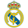
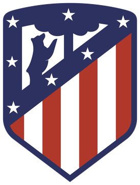
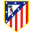

R
E
A
L
M
A
D
R
İ
D
Real Madrid Tarihçesi
Club Español de Madrid'de 1902 yılında ikiye bölünmüş ve 6 Mart 1902 tarihinde Madrid Futbol Kulübü kurulmuştur. Kuruluşundan üç yıl sonra ise İspanya Kupası finalinde Athletic Bilbao'yu devirerek ilk şampiyonluğunu kazanmıştı
- Thibaut Courtois 
- Antonio Rüdiger
- Gabriel Militao
- David Alaba
- Daniel Carvajal
- Aurelien Tchouameni
- Luka Modric
- Federico Valverde
- Toni Kroos
- Vinicius Junior
- Karim Benzema
KADRO
A
T
L
E
T
İ
C
O

Atletico Madrid Tarihçesi
Club Atlético de Madrid, İspanya'nın başkenti Madrid'de kurulmuş spor kulübüdür. Futbol takımı La Liga'da mücadele eden Atletico Madrid, Real Madrid'le birlikte Madrid'in en önemli iki kulübü arasındadır.Maçlarını 68.456 koltuk kapasiteli Wanda Metropolitano Stadyumunda oynar. Vikipedi
- Jan Oblak 
- José Giménez
- Stefan Savic
- Sergio Reguilón
- Mario Hermoso
- Nahuel Molina
- Geoffrey Kondogbia
- Axel Witsel
- Thomas Lemar
- Yannick Carrasco
- Llorente